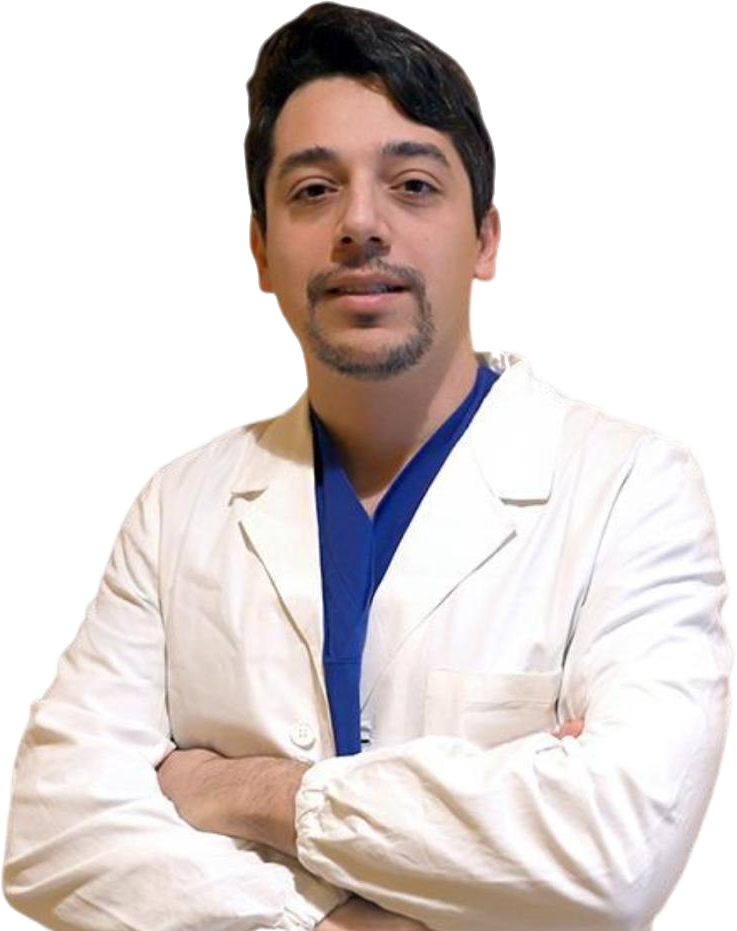
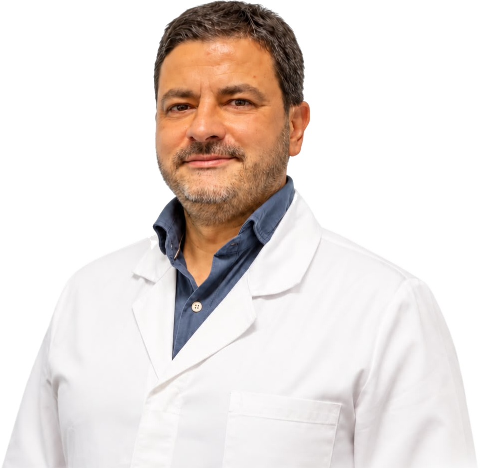
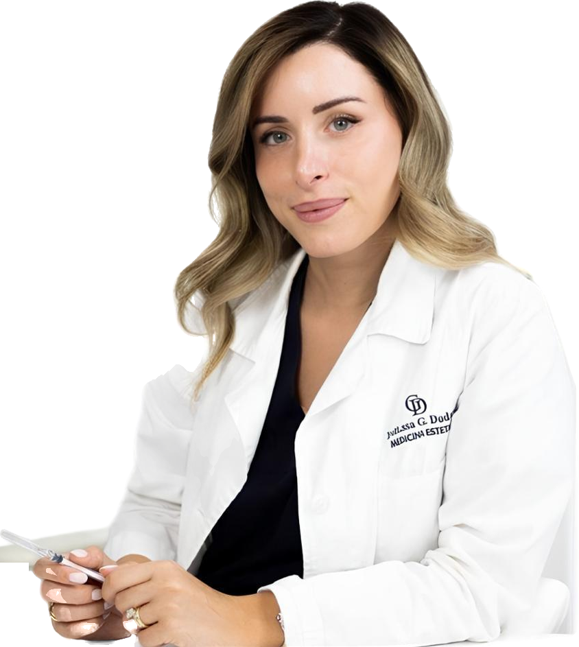
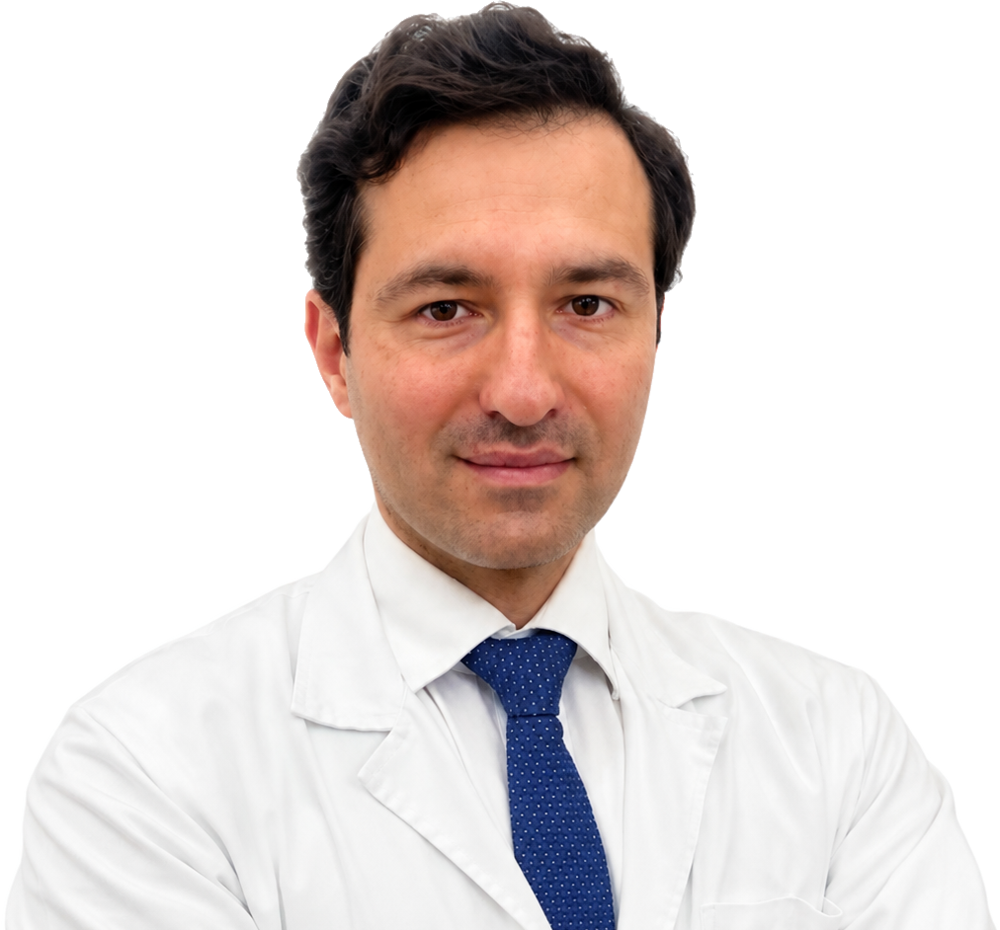

Urologia ed Andrologia

L'urologia si occupa delle vie urinarie dell'uomo e della donna e dell'apparato genitale maschile; l'andrologia della salute sessuale e riproduttiva maschile, dalla prevenzione alla cura.
Dott. Marco Salvaggio riceve al Centro Diagnostico Latorre, in Via Pietro Colletta 2 a Rosarno (RC). Per prenotare contatta la segreteria: ti aiutiamo a scegliere il giorno più comodo.
L'urologia si occupa delle malattie di reni, vescica e vie urinarie in uomini e donne e dell'apparato genitale maschile, compresa la prostata. L'andrologia si dedica alla salute sessuale e riproduttiva maschile.
Al Centro Diagnostico Latorre di Rosarno la visita può essere completata con l'ecografia dell'apparato urinario e prostatica, per una valutazione completa in un unico appuntamento.
Porta gli esami delle urine, il PSA e le ecografie precedenti, se li hai. Per l'ecografia vescicale e prostatica viene chiesto di arrivare a vescica piena. Dopo la visita l'urologo indica eventuali esami e la terapia.
In genere dai 50 anni, oppure dai 45 in caso di familiarità per tumore della prostata. L'urologo valuta insieme a te visita, PSA ed ecografia.
Sì, la visita andrologica è utile anche in età giovanile, per esempio in caso di varicocele, dolore testicolare o dubbi sulla fertilità.
Puoi prenotare telefonando al 0966 378308, scrivendoci su WhatsApp oppure direttamente in accettazione, dal lunedì al venerdì dalle 08:30 alle 12:30 e dalle 15:30 alle 19:00 e il sabato dalle 08:30 alle 12:30. I tempi di attesa per le visite specialistiche sono in media di 2–5 giorni lavorativi.









Tempi di attesa ridotti, specialisti di eccellenza, un'unica struttura moderna.
Prenota Ora